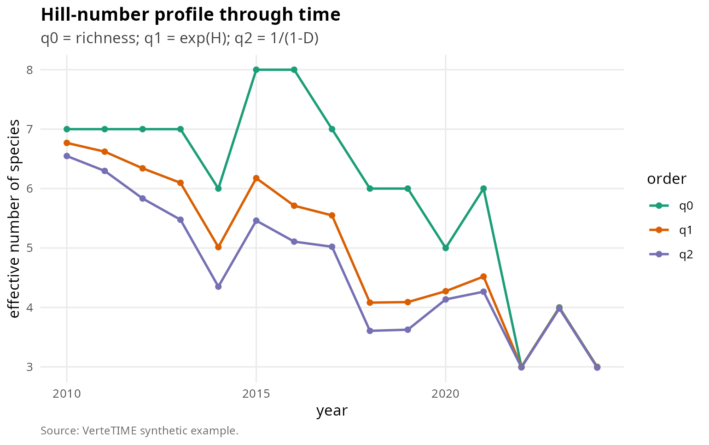
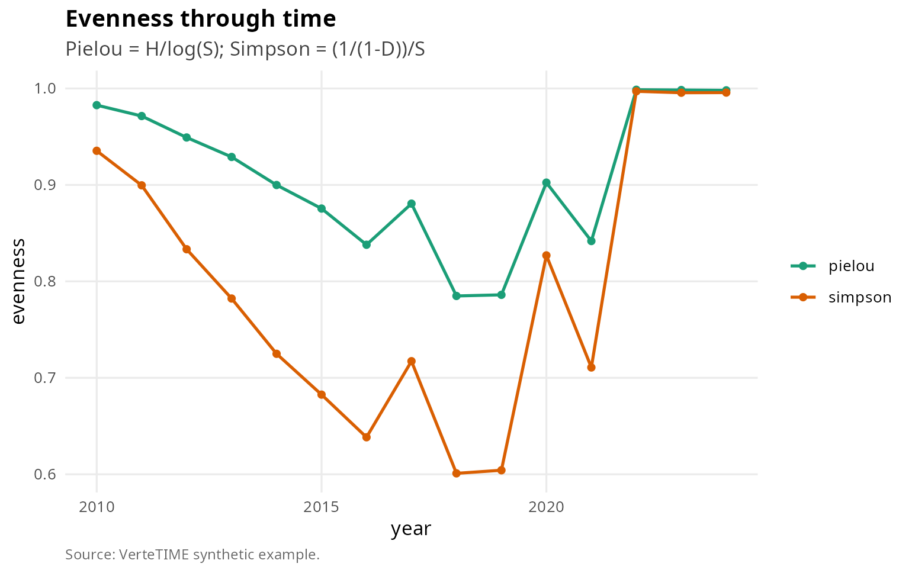
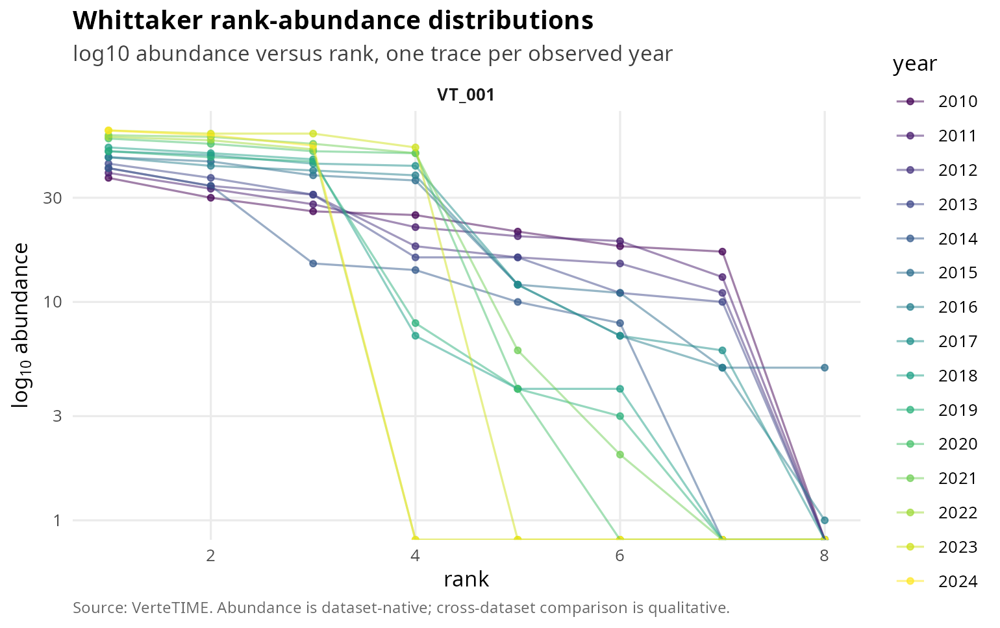
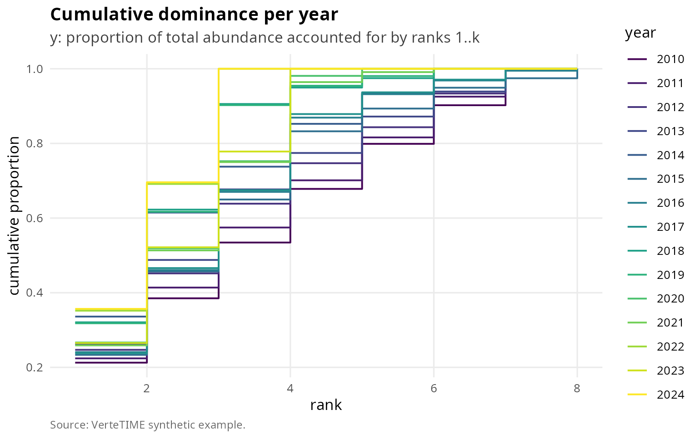
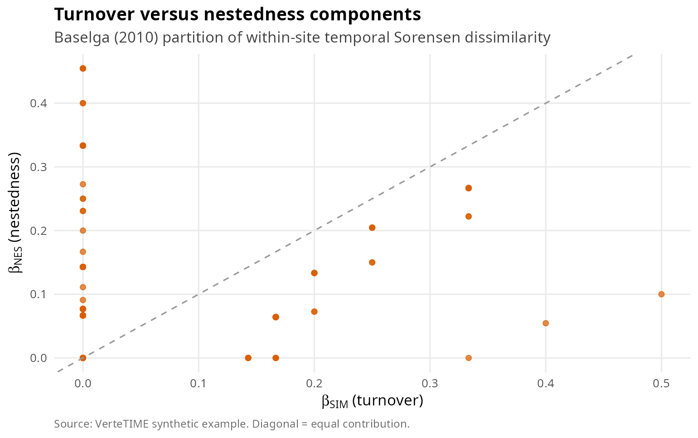
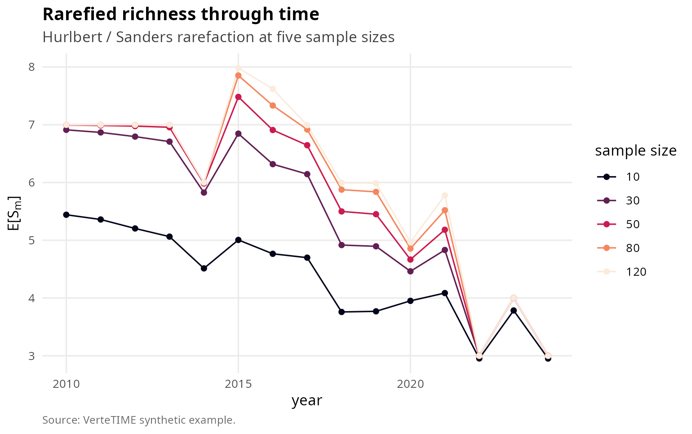
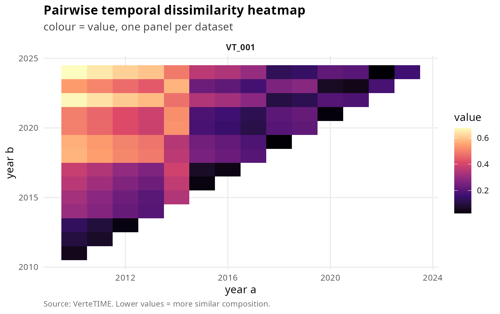

This vignette drills into the alpha-diversity, beta-diversity, turnover and nestedness layer of VerteTIME using a richer synthetic compilation designed to exercise more facets than the introductory tour.
A synthetic eight-species, fifteen-year dataset
We build a single dataset with eight species, fifteen years and an explicit cohort effect so that the temporal-turnover and Baselga partition produce non-trivial signals.
library(VerteTIME)
library(data.table)
library(dplyr)
library(ggplot2)
spp_lab <- paste0("Genus_", letters[1:8])
years <- 2010:2024
# Cohort effect: half the species peak early, half peak late, two species are
# always present, two species are intermittently present (zeroes in some years).
mat <- vapply(seq_along(spp_lab), function(s) {
base <- 12 + 3 * s
tbias <- if (s <= 4) -2 * (seq_along(years) - 1) else 2 * (seq_along(years) - 1)
noise <- rnorm(length(years), sd = 1.6)
v <- pmax(round(base + tbias + noise), 0)
if (s %in% c(7, 8)) {
v[sample(seq_along(years), size = 5)] <- 0
}
v
}, numeric(length(years)))
obs <- as.data.table(expand.grid(year = years, species_id = spp_lab,
KEEP.OUT.ATTRS = FALSE,
stringsAsFactors = FALSE))
obs[, value := as.numeric(mat[cbind(match(year, years), match(species_id, spp_lab))])]
obs[, dataset_id := "VT_001"]; obs[, site_id := "VT_001"]
setcolorder(obs, c("dataset_id","site_id","species_id","year","value"))
ds <- data.table(dataset_id = "VT_001", dataset_label = "Synthetic richer",
latitude_dd = 0, longitude_dd = 30, coord_precision_km = 1,
country_iso3 = NA_character_, realm = NA_character_,
biome = NA_character_, ecoregion = NA_character_,
year_min = min(years), year_max = max(years),
n_years = length(years), n_species = length(spp_lab),
n_covariates = 0L, is_community_metric_eligible = TRUE,
unit_class = "count", taxonomic_focus = "mixed", notes = "")
sites <- data.table(site_id = "VT_001", dataset_id = "VT_001",
site_label = "Synthetic site", latitude_dd = 0,
longitude_dd = 30, elevation_m = NA_real_,
habitat = "synthetic", coord_precision_km = 1)
species <- data.table(species_id = spp_lab, genus = "Genus",
species_epithet = letters[1:8],
class = NA_character_, order = NA_character_,
family = NA_character_, is_vertebrate = NA)
co <- vt_compilation(datasets = ds, sites = sites, species = species,
observations = obs)
co
#> <vt_compilation> with 1 dataset(s)
#> sites : 1
#> species : 8
#> observation rows : 120
#> covariates rows : 0
#> year range : 2010-2024
#> community-eligible : 1 / 1Hill numbers of orders 0, 1, 2
a <- vt_alpha_diversity(co, indices = c("q0","q1","q2"))
summary(a)
#> # A tibble: 3 × 5
#> index n_rows median mean sd
#> <chr> <int> <dbl> <dbl> <dbl>
#> 1 q0 15 6 6 1.60
#> 2 q1 15 5.01 5.01 1.27
#> 3 q2 15 4.35 4.65 1.13
ggplot(a, aes(x = year, y = value, colour = index)) +
geom_line(linewidth = 0.8) +
geom_point() +
scale_colour_manual(values = c(q0 = "#1B9E77", q1 = "#D95F02", q2 = "#7570B3"),
name = "order") +
labs(title = "Hill-number profile through time",
subtitle = "q0 = richness; q1 = exp(H); q2 = 1/(1-D)",
x = "year", y = "effective number of species",
caption = "Source: VerteTIME synthetic example.") +
vt_theme()
Hill numbers of orders 0, 1 and 2 across calendar years for the synthetic site.
Pielou and Simpson evenness
e_p <- vt_evenness(co, kind = "pielou")
e_s <- vt_evenness(co, kind = "simpson")
e_all <- bind_rows(e_p, e_s)
ggplot(e_all, aes(x = year, y = value, colour = index)) +
geom_line(linewidth = 0.8) +
geom_point() +
scale_colour_manual(values = c(pielou = "#1B9E77", simpson = "#D95F02"),
name = NULL) +
labs(title = "Evenness through time",
subtitle = "Pielou = H/log(S); Simpson = (1/(1-D))/S",
x = "year", y = "evenness",
caption = "Source: VerteTIME synthetic example.") +
vt_theme()
Pielou and Simpson evenness through time. The two indices weight rare species differently and frequently disagree on community ranking.
Whittaker rank-abundance and dominance curves

Whittaker rank-abundance per year. Heavier-tailed traces indicate stronger dominance.
dom <- vt_dominance_curve(co)
ggplot(dom, aes(x = rank, y = cumulative, colour = factor(year), group = year)) +
geom_step(linewidth = 0.6) +
scale_colour_viridis_d(option = "viridis", name = "year") +
labs(title = "Cumulative dominance per year",
subtitle = "y: proportion of total abundance accounted for by ranks 1..k",
x = "rank", y = "cumulative proportion",
caption = "Source: VerteTIME synthetic example.") +
vt_theme()
Cumulative dominance curves; the y axis is the cumulative proportion of total abundance accounted for by the top-k species.
Sorensen partition: turnover versus nestedness
bp <- vt_beta_partition(co)
head(bp)
#> <vt_turnover> 6 rows
#> # A tibble: 6 × 7
#> dataset_id site_id year_a year_b beta_sor beta_sim beta_nes
#> <chr> <chr> <int> <int> <dbl> <dbl> <dbl>
#> 1 VT_001 VT_001 2010 2011 0 0 0
#> 2 VT_001 VT_001 2010 2012 0 0 0
#> 3 VT_001 VT_001 2011 2012 0 0 0
#> 4 VT_001 VT_001 2010 2013 0 0 0
#> 5 VT_001 VT_001 2011 2013 0 0 0
#> 6 VT_001 VT_001 2012 2013 0 0 0
ggplot(bp, aes(x = beta_sim, y = beta_nes)) +
geom_point(alpha = 0.7, size = 1.5, colour = "#D95F02") +
geom_abline(slope = 1, intercept = 0, colour = "grey60", linetype = 2) +
labs(title = "Turnover versus nestedness components",
subtitle = "Baselga (2010) partition of within-site temporal Sorensen dissimilarity",
x = expression(beta[SIM]~"(turnover)"),
y = expression(beta[NES]~"(nestedness)"),
caption = "Source: VerteTIME synthetic example. Diagonal = equal contribution.") +
vt_theme()
Baselga (2010) decomposition of pairwise temporal Sorensen dissimilarity. Each point is a (year_a, year_b) pair; x is the Simpson turnover component, y is the nestedness-resultant component.
NODF nestedness
vt_nestedness(co)
#> # A tibble: 1 × 6
#> dataset_id site_id metric value n_pairs_rows n_pairs_cols
#> <chr> <chr> <chr> <dbl> <dbl> <dbl>
#> 1 VT_001 VT_001 NODF 75.2 105 28NODF returns a value in [0, 100] where higher values
indicate that years with fewer species are stronger subsets of years
with more species. The synthetic generator used here injects a positive
temporal trend on the late-cohort species and a negative trend on the
early-cohort species, which produces a moderate NODF.
Coverage-based rarefaction
r_small <- vt_rarefaction(co, sample = 30)
r_small
#> # A tibble: 15 × 7
#> dataset_id site_id year n_total S_obs sample S_rarefied
#> <chr> <chr> <int> <dbl> <int> <dbl> <dbl>
#> 1 VT_001 VT_001 2010 174 7 30 NA
#> 2 VT_001 VT_001 2011 174 7 30 NA
#> 3 VT_001 VT_001 2012 166 7 30 NA
#> 4 VT_001 VT_001 2013 164 7 30 NA
#> 5 VT_001 VT_001 2014 122 6 30 NA
#> 6 VT_001 VT_001 2015 197 8 30 NA
#> 7 VT_001 VT_001 2016 191 8 30 NA
#> 8 VT_001 VT_001 2017 206 7 30 NA
#> 9 VT_001 VT_001 2018 159 6 30 NA
#> 10 VT_001 VT_001 2019 154 6 30 NA
#> 11 VT_001 VT_001 2020 210 5 30 NA
#> 12 VT_001 VT_001 2021 224 6 30 NA
#> 13 VT_001 VT_001 2022 162 3 30 NA
#> 14 VT_001 VT_001 2023 230 4 30 NA
#> 15 VT_001 VT_001 2024 171 3 30 NA
samples <- c(10, 30, 50, 80, 120)
rare_grid <- bind_rows(lapply(samples, function(s) {
out <- vt_rarefaction(co, sample = s)
out$sample_size <- s
out
}))
ggplot(rare_grid, aes(x = year, y = S_rarefied, colour = factor(sample_size))) +
geom_line() + geom_point() +
scale_colour_viridis_d(option = "rocket", name = "sample size") +
labs(title = "Rarefied richness through time",
subtitle = "Hurlbert / Sanders rarefaction at five sample sizes",
x = "year", y = expression(E*"["*S[m]*"]"),
caption = "Source: VerteTIME synthetic example.") +
vt_theme()
Rarefied richness at sample sizes 10, 30, 50, 80 and 120 across years. The decay of S_rarefied versus sample size traces the species-accumulation curve, conditional on the year.
Pairwise temporal dissimilarity heatmap
tt <- vt_temporal_turnover(co, method = "bray", pair = "all_pairs")
vt_plot_beta_heatmap(tt)
Bray-Curtis pairwise temporal dissimilarity heatmap. Rows and columns are years; colour is the Bray-Curtis distance.
Limitations and mitigations
The synthetic generator produces a community whose structure is more orderly than any real dataset; the real compilation shows heavier-tailed rank-abundance distributions, longer gaps, and stronger spatial autocorrelation between adjacent sites of multi-site studies. Use this vignette to learn the function calls; consult the long-form manuscript for diagnostics on the real compilation. NODF and Sorensen partition both depend on presence-absence rather than abundance, so they are insensitive to magnitude changes that other metrics (Bray-Curtis, Hellinger) are designed to capture.